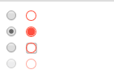

是否曾经被业务提出"能改改这个单选框的颜色吧！让它和主题颜色搭配一下吧！"，然后苦于原生不支持换颜色，最后被迫自己手撸一个凑合使用。若抛开input[type=radio]重新开发一个，发现要模拟选中、未选中、不可用等状态很繁琐，而涉及单选框组就更烦人了，其实我们可以通过label、::before、:checked和tabindex，然后外加少量JavaScript脚本就能很好地模拟出一个样式更丰富的“原生”单选框。下面我们一起来尝试吧！
由于我们的目标是改变单选框颜色，其他外观特征和行为与原来的单选框一致，那么我们就必须先了解单选框原来的外观特征和行为主要有哪些。
1.外观特征
1.1.常态样式
margin: 3px 3px 0px 5px;
border: none 0;
padding: 0;
box-sizing: border-box;
display: inline-block;
line-height: normal;
position: static;
注意：外观上我们必须要保证布局特性和原生的一致，否则采用自定义单选框替换后很大机会会影响整体的布局，最后导致被迫调整其他元素的布局特性来达到整体的协调，从而扩大了修改范围。
1.2.获得焦点的样式
outline-offset: 0px;
outline: -webkit-focu-ring-color auto 5px;
注意：这里的获取焦点的样式仅通过键盘Tab键才生效，若通过鼠标点击虽然单选框已获得焦点，但上述样式并不会生效。
1.3.设置为disabled的样式
color: rgb(84, 84, 84);
2.行为特征
单选框的行为特征，明显就是选中与否，及选中状态的改变事件，因此我们必须保持对外提供change事件。
另外值得注意的是，当通过键盘的Tab键让单选框获得焦点后，再按下Space键则会选中该单选框。

上图中左侧就是原生单选框，右侧为我们自定义的单选框。从上到下依次为未选中、选中、获得焦点和disabled状态的样式。